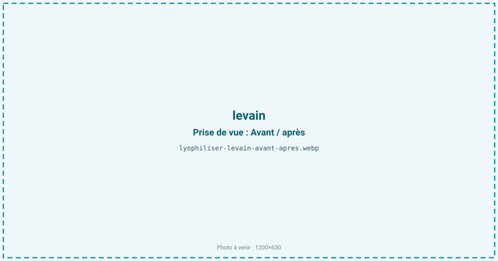
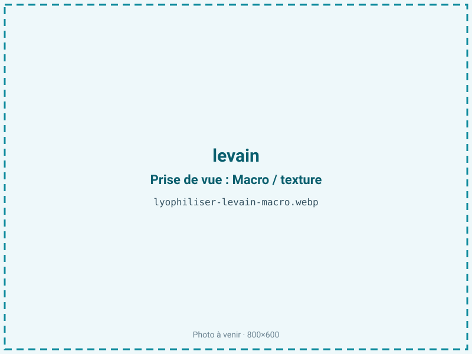
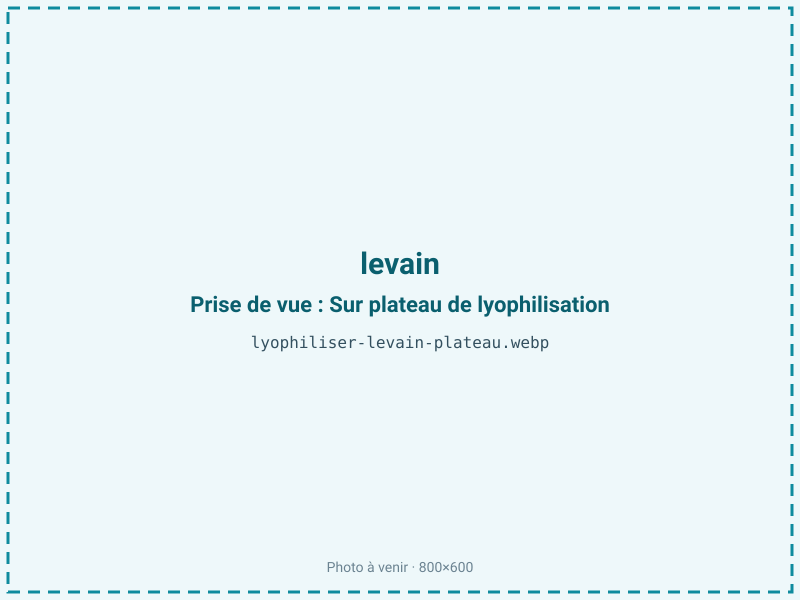
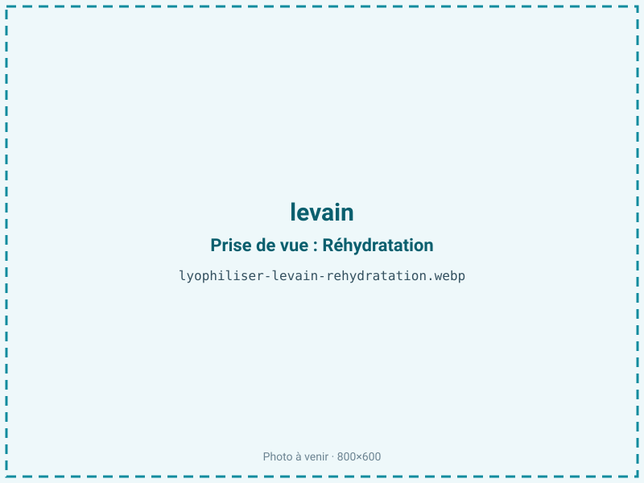

Lyophiliser du levain
Un levain-chef doit être rafraîchi chaque jour et meurt vite s'il est négligé. La lyophilisation le fige à basse température en gardant levures et bactéries vivantes, prêtes à repartir après réhydratation. On obtient un levain sec réactivable, transportable et conservable des mois, sans entretien quotidien ni chaîne du froid.

En bref
Comment levain se comporte à la lyophilisation
Le levain est un écosystème vivant : une symbiose de levures sauvages (souvent Kazachstania ou Saccharomyces) et de bactéries lactiques comme Lactobacillus sanfranciscensis, installées dans une pâte de farine et d'eau à pH 3,5 à 4,2. Un levain ferme retient autour de 50 à 55 % d'eau, dispersée dans un réseau d'amidon et de gluten, avec des acides organiques (lactique et acétique) qui portent l'arôme.
Contrairement à un fruit ou une viande, l'objectif n'est pas la texture mais la survie cellulaire. À la congélation, les cristaux de glace peuvent percer les membranes des levures et des bactéries : sans cryoprotecteur, la mortalité est élevée. On cherche donc à figer les cellules dans un état vitreux qui les protège. À la sublimation, l'eau part et le métabolisme s'arrête net dès que l'activité de l'eau descend assez bas ; les cellules entrent en vie ralentie, prêtes à redémarrer une fois réhydratées. Les acides organiques et le pouvoir levant se conservent bien si le procédé reste doux.
Paramètres de cycle
Ajouter un cryoprotecteur (saccharose, tréhalose ou lait écrémé) au levain avant traitement améliore nettement la survie des souches. Étaler en couche fine, autour de 3 à 5 mm, pour un séchage rapide et homogène. Congeler assez vite, à −35 à −40 °C, pour former de petits cristaux moins destructeurs pour les cellules. En sublimation, garder une clayette basse pour ne pas échauffer les micro-organismes.
On vise une activité de l'eau très basse, de l'ordre de 0,10 à 0,20, pour préserver le pouvoir levant. Le levain étant un produit maigre (moins de 2 % de lipides), rien n'interdit de descendre bas ; au contraire, une aw basse est indispensable pour bloquer tout métabolisme résiduel et stabiliser durablement les souches. Le critère d'arrêt vise cette aw basse et une poudre parfaitement sèche, car la moindre humidité relance l'activité et raccourcit la viabilité.
Pièges connus
- Cryoprotecteurs pour la survie des souches.
- Reprise d'humidité fatale : barrière + absorbeur.



Variantes & provenance
Un levain de seigle, plus riche en bactéries et en enzymes, ne se comporte pas comme un levain de blé ou d'épeautre, plus doux. Un levain liquide (hydratation 100 % ou plus) contient bien plus d'eau qu'un levain dur, donc un cycle plus long et un rendement plus faible. La maturité au moment du traitement compte : un levain au pic d'activité, juste après un rafraîchi, offre la meilleure population cellulaire et la meilleure réactivation ; un levain épuisé ou trop acide redémarre mal. La souche et le terroir microbien (levain de collection, levain régional) définissent l'arôme final. Plus le levain est acide, plus il faut soigner le cryoprotecteur pour protéger des cellules déjà stressées.
Conservation & DLUO
Ici, le facteur limitant n'est ni l'oxydation ni le brunissement mais la perte de viabilité des souches, accélérée par toute reprise d'humidité. Le levain étant maigre (moins de 2 % de lipides), une activité de l'eau basse lui est franchement favorable : elle maintient les cellules en dormance. Le danger est l'humidité résiduelle ou une reprise à l'air : dès que l'aw remonte au-dessus de 0,30, le métabolisme redémarre partiellement, les réserves des cellules s'épuisent et la population chute, une reprise d'humidité est donc fatale à la conservation. Le conditionnement doit être une barrière azotée avec absorbeur d'humidité, à l'abri de l'air. Comptez 12 à 24 mois en barrière azotée ; un stockage au frais, voire au congélateur, prolonge encore la viabilité des souches. La lumière et la chaleur, qui stressent les micro-organismes, sont à éviter.
12 à 24 mois en barrière azotée.
Estimez selon votre emballage :
Face aux autres procédés de séchage
Le séchage à l'air ou à chaud tue l'essentiel des levures et des bactéries : au-delà de 40 à 45 °C, la population s'effondre et le levain ne redémarre plus, on n'obtient qu'une farine acidulée morte. Le micro-ondes sous vide, même à basse température moyenne, crée des points chauds locaux qui grillent les cellules. Le séchage à l'étuve donne le même résultat létal. Seule la lyophilisation, qui travaille dans le froid et fige les cellules dans un état vitreux, préserve un taux de survie suffisant pour réactiver le levain. C'est la seule méthode de conservation durable d'un levain vivant hors réfrigération, et celle qu'utilisent les banques de souches.
Marchés & applications
Levain sec réactivable pour boulangers artisanaux et particuliers, kits de panification prêts à l'emploi, sauvegarde de levains-chefs de collection ou régionaux, souches de démarrage pour la boulangerie industrielle. Les clients types sont les moulins et fournisseurs d'ingrédients boulangers, les artisans souhaitant sécuriser leur levain historique contre un accident, les marques de kits maison, et les conservatoires de biodiversité microbienne. Un levain lyophilisé permet aussi d'expédier une souche par la poste sans chaîne du froid.
- Levain sec réactivable
- Kits de boulangerie
- Souches de collection
Questions fréquentes — levain
Le levain lyophilisé redémarre-t-il vraiment ?
Oui, après réhydratation et un à deux rafraîchis ; la population dormante se réveille en quelques heures si la lyophilisation a été douce.
Pourquoi ajouter un cryoprotecteur ?
Il limite la casse des membranes cellulaires par les cristaux de glace ; sans lui, la survie des levures et des bactéries chute fortement.
Combien de temps faut-il pour le réactiver ?
Généralement 24 à 48 h avec deux ou trois rafraîchis, le temps de retrouver un plein pouvoir levant.
Levain de blé ou de seigle ?
Les deux se lyophilisent ; le seigle, plus riche en flore et en enzymes, redémarre souvent plus vite.
Peut-on l'envoyer par la poste ?
Oui, c'est un de ses intérêts : sec et stable en barrière, il voyage sans chaîne du froid.
Faut-il le congeler pour le stocker ?
Pas obligatoire en barrière azotée, mais le froid prolonge nettement la viabilité des souches.
La saveur du levain est-elle conservée ?
Le profil microbien qui fait l'arôme est préservé ; le pain refait retrouve les notes du levain d'origine après quelques rafraîchis.
Prochaine étape : envoyez-nous 200 g
Vous avez les repères du levain. La suite logique : nous envoyer un échantillon et repartir avec une fiche technique sur votre produit — rendement, aw finale, coût au kilo.
Tester du levain — 250 à 500 €Déductible de votre premier lot.